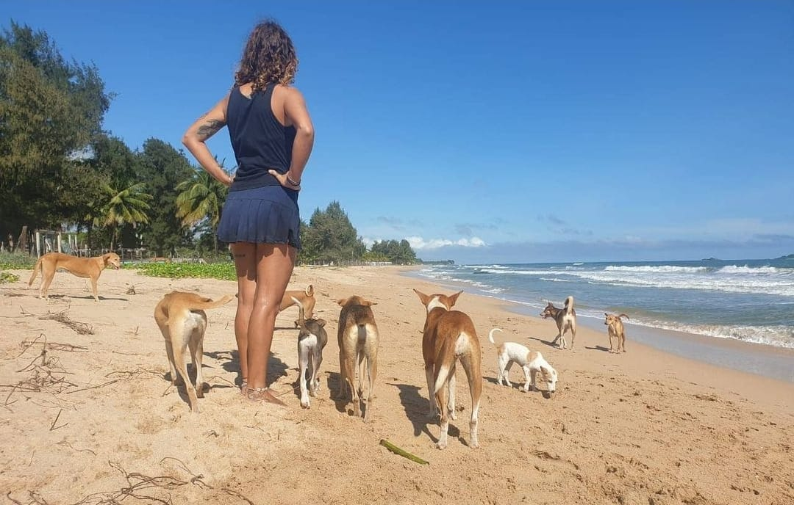
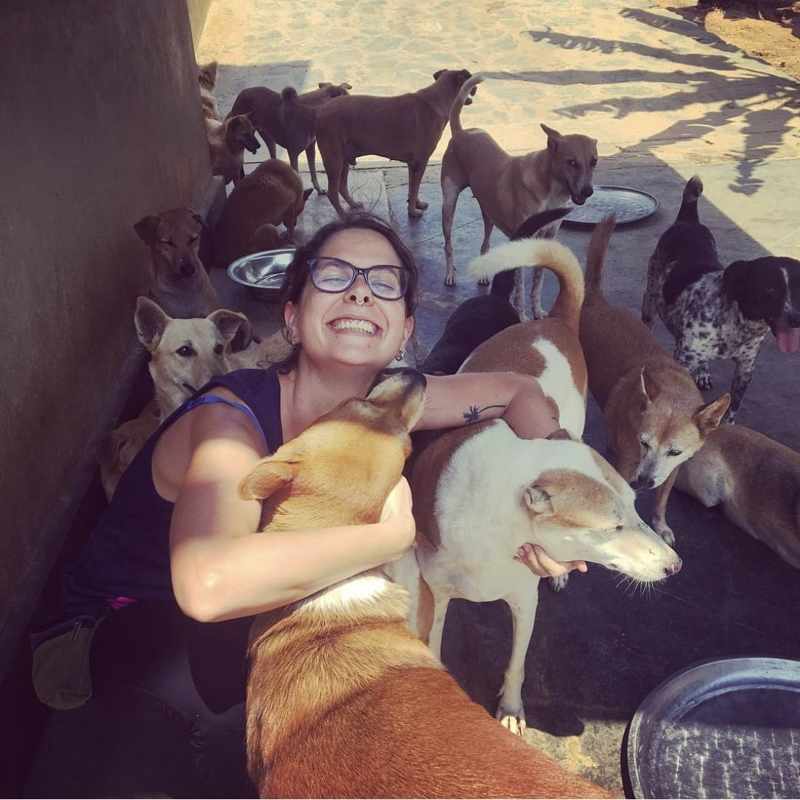
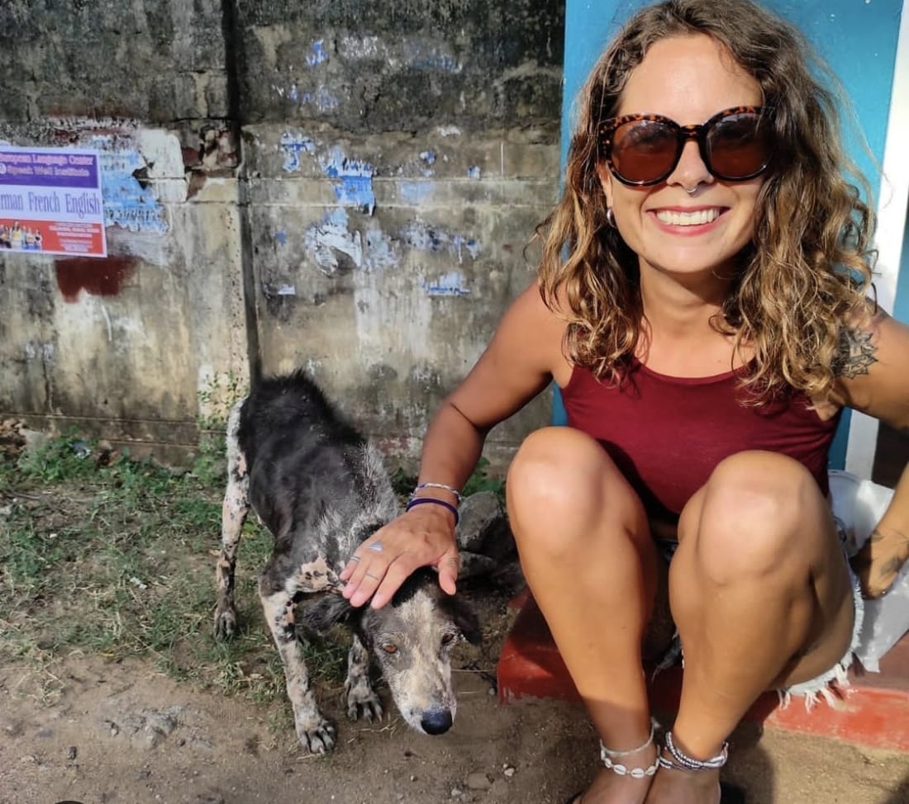
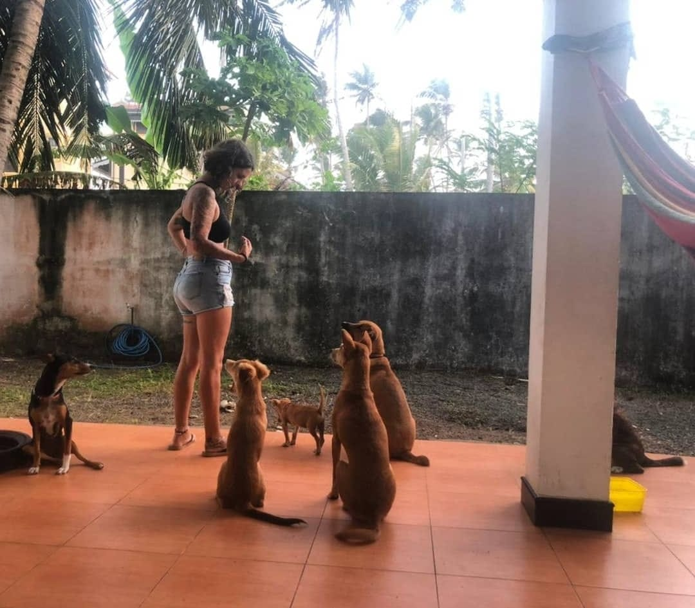
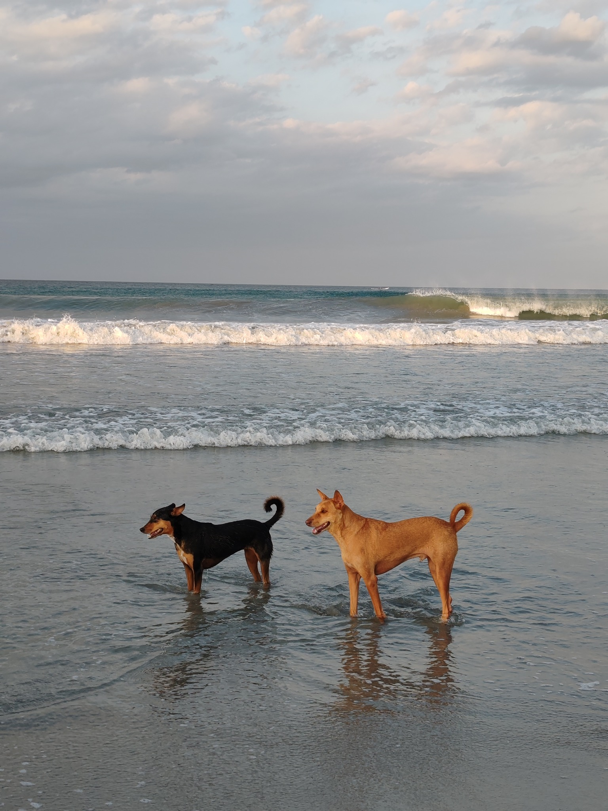
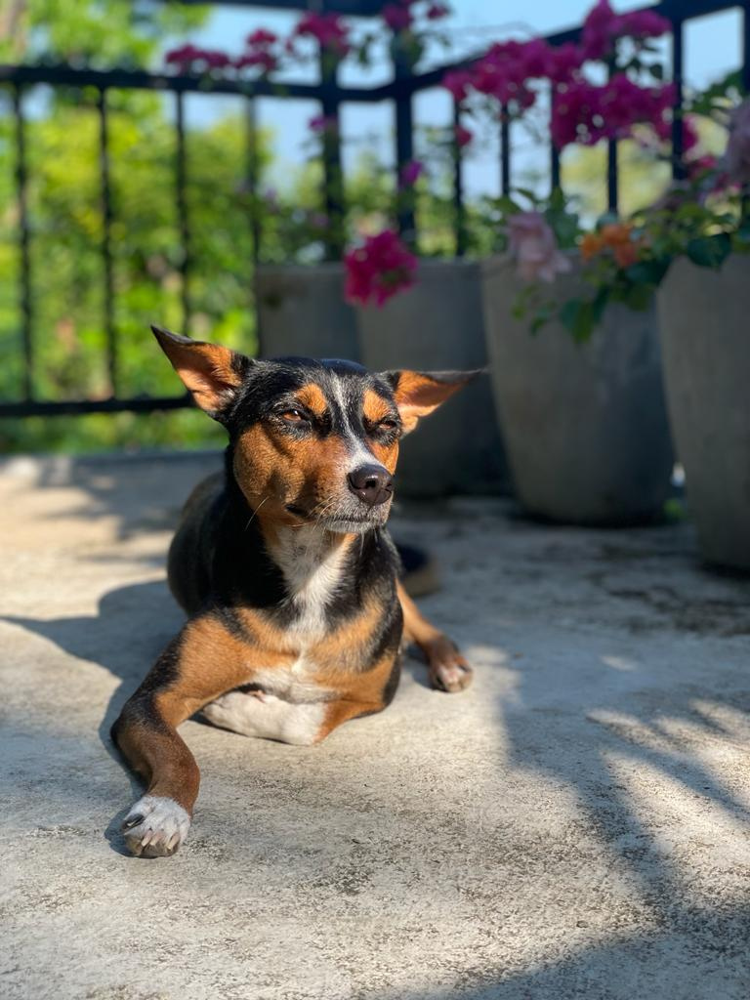
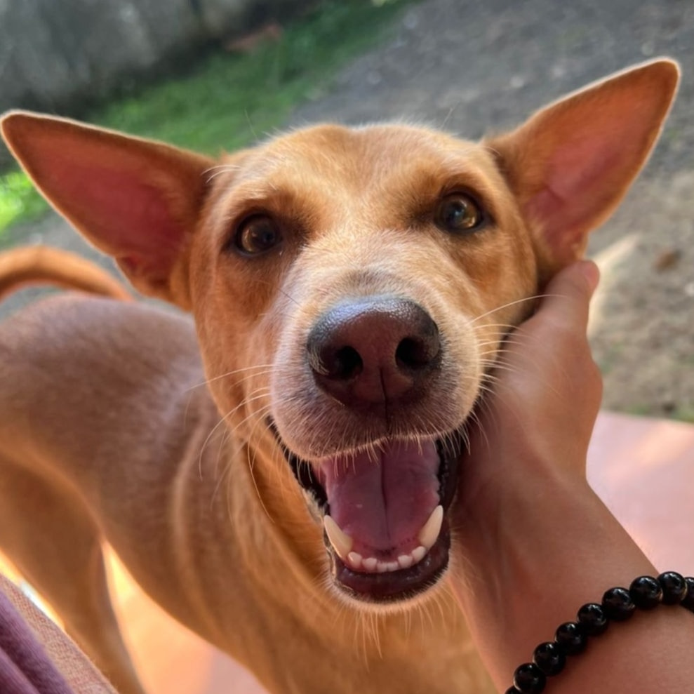
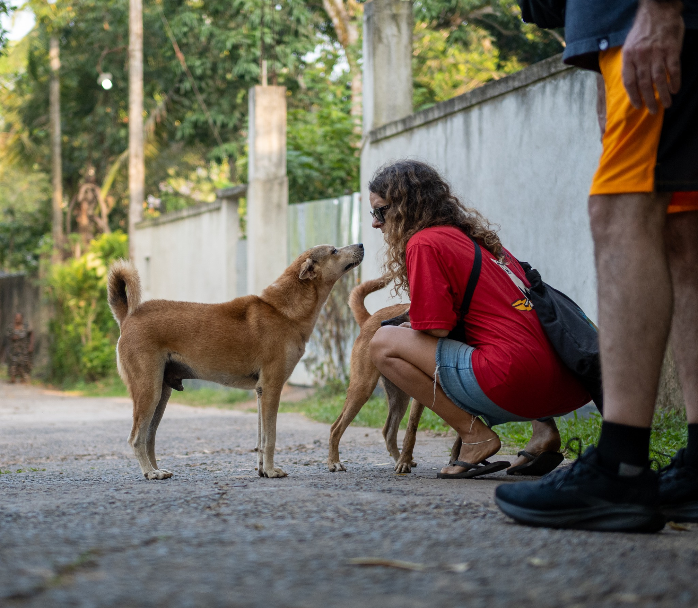

01
Nearly two decades with pet dogs
Before working professionally in behaviour, I spent nearly two decades as a pet sitter. That gave me years of everyday experience living with, caring for and observing pet dogs in human homes.
A large part of what I know about dogs comes from living among them.

I’m a dog behaviour professional based in Sri Lanka, specialising in free-living and village dogs, fearful and anxious dogs, and dogs whose independence or sensitivity does not always fit neatly into domestic life.
My work brings together years of everyday experience with pet dogs, shelter and rescue work, formal behaviour education and research into what happens when free-living dogs transition into human homes.

My path into behaviour grew gradually — from years spent with pet dogs, through rescue and CNVR work, to wanting to understand what happens after a dog is brought into a human home.
Before working professionally in behaviour, I spent nearly two decades as a pet sitter. That gave me years of everyday experience living with, caring for and observing pet dogs in human homes.

Alongside petsitting, I spent much of my free time volunteering in shelters around the world. Eventually rescue became my full-time focus. In Sri Lanka I worked with three different shelters, organised CNVR events and took part in hands-on rescue and rehabilitation.

Over time — especially after adopting my own two dogs — I became increasingly interested not only in rescue and rehabilitation, but in what happens when dogs are asked to adapt to an entirely different world.

That curiosity led me back to study. I completed my Diploma in Dog Behaviour & Psychology and began working professionally in behaviour, with a particular focus on village and free-living dogs and the transition into human homes.
They shaped my path in completely different ways — one through fear and sensitivity, the other through communication, social life and boundaries.


Living with such a fearful dog prompted me to go deeper into dog behaviour. She made me want to understand what happens when a dog feels overwhelmed by the world around them — and what actually helps them feel safe.
Through Bambi, I became increasingly interested in emotional safety, nervous-system regulation, trust, environment and relationship, rather than relying on simple training answers. In many ways, she was the dog who propelled me into behaviour work.

PingPong deepened my understanding of canine communication, social life and boundaries. Watching how clearly he communicates with other dogs — when he wants space, when he is comfortable and when he is willing to engage — showed me how much dogs are already telling us when we learn how to pay attention.
He also showed me the potential these dogs have: their adaptability, social intelligence and ability to build profound relationships with people without losing who they are.

I’m based in Sri Lanka, where free-living dogs are part of the everyday landscape. They move through villages, beaches, streets and communities with a degree of autonomy that most companion dogs never experience.
Watching them has shaped the way I understand behaviour. I’ve seen dogs negotiate conflict, form friendships, communicate boundaries, choose distance, adapt to people, avoid situations they don’t trust and make decisions for themselves.
That kind of learning is difficult to reproduce in a controlled training environment.
Dog Behaviour & Psychology.
Master Course completion.
Beyond Rescue: Evaluating the Suitability and Sustainability of Free-Living Dogs as Pets.
I believe behaviour is information.
My work is relationship-based, welfare-focused and centred on understanding the individual dog. The goal is not to create a perfectly obedient dog. It is to help you understand the dog you actually have — and build a life together that works for both of you.